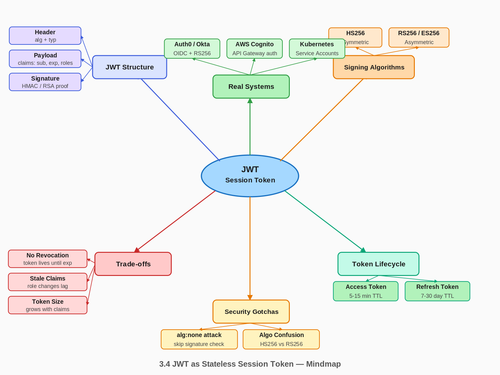

01 🎯 Goal of This Subtopic
Why are you studying this? What should you be able to do after this session?
- Be able to explain exactly what a JWT is, how its three-part structure works, and why it eliminates the need for a server-side session store — in under 60 seconds without notes.
- Understand the fundamental trade-off between JWT's statelessness (no lookup required, freely horizontally scalable) and its critical weakness (tokens cannot be revoked before expiry without reintroducing state).
- Identify when JWT is the right tool (stateless microservices, cross-domain auth, short-lived API tokens) versus when server-side sessions are safer (applications requiring instant revocation).
- Describe the secure token lifecycle: short-lived access tokens + long-lived refresh tokens, the refresh flow, and how to handle token rotation safely.
02 ✅ What Mastery Looks Like
Concrete, testable proof that you own this concept — not just familiarity.
- Can decode a JWT by hand (base64url-decode each part) and explain what each field in the header, payload, and signature means, without looking at documentation.
- Can explain the exact steps a server performs to validate a JWT: decode → verify algorithm → verify signature → check
exp → check iss/aud — and state what happens if any step fails.
- Can describe the
alg: none attack, the algorithm confusion (HS256 vs RS256) attack, and explain why both require hardcoding the expected algorithm on the server to prevent.
- Can design a complete token lifecycle: issuance, short-lived access token, long-lived refresh token, rotation on refresh, revocation via denylist, and what to store where.
- Can articulate in a FAANG interview why JWT is preferred over Redis sessions for microservice-to-service auth, and why Redis sessions are preferred for web app user auth requiring instant logout.
💡 Rule of thumb: If you can teach it to someone else and field their follow-up questions, you've mastered it.
03 🗓️ Study Phases to Achieve Mastery
Work through each phase in order. Don't move to the next until you can honestly tick every item.
Goal: Read deeply enough that you could explain the concept without the doc.
- Read RFC 7519 — the JWT specification; jwt.io/introduction is a readable summary with interactive decoder
- Read Auth0's "Introduction to JSON Web Tokens" at jwt.io — use the interactive decoder on real tokens
- Read OWASP JWT Security Cheat Sheet — algorithm attacks, validation checklist (cheatsheetseries.owasp.org)
- Read through Sections 5–9 (Core Definition → How It Works) carefully — don't skim
- Re-read the Cheatsheet (Section 4) and try to recite it from memory after
Goal: Verify you can reproduce the knowledge in your own words without looking.
- Close the doc — write out the Core Definition from memory, then compare
- Explain First Principles out loud without notes — what problem does JWT solve and why?
- Reconstruct the How It Works mechanics step by step from memory (issuance, validation, refresh)
- Restate each Trade-off row in your own words — if you can't explain the cost, you don't own it yet
Goal: Connect to real systems and simulate interview scenarios.
- Go through Real-World System Examples (Section 10) — verify each claim independently and add anything missed to My Notes
- Practice the Interview Application (Section 12) out loud — say the trigger phrases and your response as if in a live interview
- Work through Common Misconceptions (Section 13) — for each, explain why the misconception is wrong, not just that it is
- Trace the Relationships to Other Concepts (Section 14) — can you explain each connection without looking?
Goal: Confirm you actually own it, not just recognize it.
- Answer every Self-Check Quiz question (Section 15) out loud without looking at your notes
- Recite the Cheatsheet (Section 4) from memory — if you can't, re-do Phase 2
- Tick off items in What Mastery Looks Like (Section 2) — only check if you can demonstrate it on demand
- Teach this concept out loud to an imaginary interviewer for 2 minutes without hesitation
04 📋 Cheatsheet
Everything you need to recall this concept in 30 seconds — for quick review before an interview.

3.4 JWT as Stateless Session Token — Mindmap
ONE-LINER
A JWT is a cryptographically signed, self-contained token that encodes user
claims directly inside it — the server verifies the signature and trusts the
claims without any database lookup, making it inherently stateless.
KEY PROPERTIES / RULES
1. Structure: Header.Payload.Signature — all base64url-encoded, dot-separated.
Payload is NOT encrypted — anyone can decode it. Never store secrets in it.
2. Signature = HMAC-SHA256(base64url(header) + "." + base64url(payload), secret)
for HS256, or RSA/ECDSA signature for RS256/ES256.
3. Statelessness has a price: tokens CANNOT be revoked before expiry without
a denylist — which reintroduces state. This is the core JWT trade-off.
4. Access tokens: short-lived (5–15 min). Refresh tokens: long-lived (7–30 days),
stored server-side for revocability.
5. ALWAYS hardcode the expected algorithm on the server. Never trust the "alg"
field in the token header — it's attacker-controlled input.
DECISION RULE
Use JWT when: stateless microservice-to-service auth, cross-domain/cross-service
tokens, short-lived API tokens, OAuth2 flows.
Use Redis sessions when: web app user auth requiring instant logout/revocation,
session data must be mutable server-side, or token size is a concern.
NUMBERS TO REMEMBER
Typical access token TTL: 5–15 minutes
Typical refresh token TTL: 7–30 days
Typical JWT size: 200–400 bytes (grows with claims)
HS256 secret key minimum: 256 bits (32 bytes)
GOTCHA TO NEVER FORGET
The JWT header's "alg" field is attacker-controlled input. If your server
accepts whatever algorithm the token claims, an attacker can set alg=none
and forge any payload with no signature. Hardcode the expected algorithm.
05 🧠 Core Definition
A JSON Web Token (JWT) is a compact, URL-safe string consisting of a base64url-encoded header, payload (claims), and cryptographic signature — allowing any party with the signing key (or the matching public key) to verify the token's authenticity and trust its contents without querying a central session store.
06 📦 Core Concepts
JWT Anatomy: Header.Payload.Signature
Payload
{ "sub": "user-123", "roles": ["admin"], "iss": "auth.example.com", "aud": "api.example.com", "exp": 1715511300, "iat": 1715510400, "jti": "unique-id-abc" }
The claims. Readable by anyone — never store secrets here. Keep lean: only include what resource servers need for authorization decisions.
Signature
HMAC_SHA256(base64url(header) + "." + base64url(payload), secret)
Cryptographic proof the token hasn't been tampered with. Tamper with any byte of header or payload and the signature check fails. This is the only part that requires the key.
Signing Algorithms: HS256 vs RS256 / ES256
HS256
Symmetric
Same secret signs and verifies. Simple and fast, but the secret must be shared with every verifier. Any service that can verify can also forge tokens. Use only when all verifiers are internal and fully trusted.
RS256 / ES256
Asymmetric
Private key signs (auth server only). Public key verifies (any service). A verifier cannot forge tokens. Correct choice for OAuth2, OpenID Connect, and any federated identity scenario. ES256 produces shorter signatures.
Access Token + Refresh Token Pattern
A single long-lived JWT is dangerous: if stolen, it's valid until expiry. The production pattern uses two tokens. An access token is short-lived (5–15 min), sent in every API request via Authorization: Bearer <token>, and fully stateless. A refresh token is long-lived (7–30 days), stored in an HTTP-only cookie, and traded to the auth server for a new access token when the current one expires. Refresh tokens can be revoked server-side — this is the escape hatch for revocability without making access tokens stateful.
Token Revocation and the Stateless Paradox
JWT's core tension: statelessness eliminates server lookups but also eliminates the ability to instantly invalidate a token. Solutions in order of preference: (1) Short TTL (5–15 min) — minimal window of compromise. (2) Token denylist in Redis — on logout/revoke, store the jti claim in Redis with TTL matching the token's remaining lifetime; every request checks the denylist. (3) Token rotation — on each refresh, issue a new refresh token and invalidate the old one; detect reuse of revoked refresh tokens as a compromise signal and revoke the entire token family.
07 🔍 First Principles — Why Does This Exist?
HTTP is stateless — each request arrives with no memory of prior interactions. Web applications need to know who is making a request. The classic solution was server-side sessions: the server stores session data (in memory or Redis), issues a random session ID to the client, and looks up that ID on every subsequent request. This works for a monolith or small cluster sharing a session store, but creates a serious problem in microservices: every independent service would need access to the same session store on every request — a latency tax, a single point of failure, and tight coupling between every service and the auth infrastructure.
JWTs were designed to make the session data self-contained. Instead of issuing a random ID that must be looked up, the auth server issues a token that contains the session data (claims) and a cryptographic proof of authenticity (signature). Any service with the signing key (or the public key) can verify the token and extract the claims locally — no network call. The receiver checks the math: valid signature? Not expired? Trust the claims.
This is why JWTs became the backbone of OAuth2 and OpenID Connect: a user authenticates once with an identity provider, receives a JWT, and that token can authorize requests to dozens of independent resource servers without any of them calling back to the identity provider on every request. The cryptographic signature replaces shared state. The trade-off — inability to revoke before expiry — is the direct consequence of removing that shared state. Understanding this trade-off is the entire key to using JWTs correctly.
08 🗺️ Mental Models
Model 1: The Government-Issued ID Card
A JWT is like a government-issued identity card. The government (auth server) puts your name, photo, and permissions on it, then stamps it with an unforgeable seal (signature). Any border agent (resource server) can verify the card is genuine by checking the seal — without calling the government office. The card expires on a printed date; before then, it's valid even if the government would prefer to revoke it. Where the model breaks: a physical ID can be reported stolen and agents can be manually notified; a JWT cannot be "reported stolen" to resource servers without a centralized denylist — which reintroduces exactly the server-side state you were trying to avoid.
Model 2: The Sealed Envelope
Imagine a sealed envelope. The sender writes claims inside, seals it with wax (signature), and hands it to the carrier. Any recipient can verify the wax seal is unbroken and belongs to the sender. They open the envelope and trust the contents — no phone call needed. The envelope is self-contained. Where the model breaks: this model clarifies why revocation is hard — you can't chase down an envelope already delivered — and why the payload isn't secret: anyone can open the envelope and read it. The seal only proves authenticity, not confidentiality. If you want confidentiality, use JWE (JSON Web Encryption).
Model 3: The Signed Cheque vs. Cash
A server-side session ID is like cash — valuable only because the bank (session store) says so. A JWT is like a signed cheque — it carries the payer's info and signature, and any bank with the right tools can honor it independently. Cash is instantly revocable (bank can freeze an account); a cheque can expire but can't be recalled once in circulation. Where the model breaks: cheques are singular; JWTs are copyable. Stealing a JWT is like photographing a cheque — the thief now has all the information needed to present it anywhere until it expires.
09 ⚙️ How It Works — Mechanics
Token Issuance (Login Flow)
- 1User sends credentials to auth server via
POST /login over HTTPS.
- 2Auth server validates credentials: hash comparison, MFA check, account status.
- 3Auth server builds the JWT payload:
{ sub, iss, aud, roles, iat, exp, jti }. exp = now + 900 seconds (15 min). jti = random UUID for denylist support.
- 4Auth server creates JWT:
base64url(header) + "." + base64url(payload) → sign with private key → append . + base64url(signature).
- 5Auth server also issues an opaque refresh token, stores it server-side (Redis or DB) with the user ID and expiry.
- 6Returns
{ "access_token": "<jwt>", "expires_in": 900 }. Refresh token goes in an HTTP-only, Secure, SameSite=Strict cookie — not in the JSON body.
Token Validation (Request Flow)
1Parse — split on .; reject if not exactly 3 parts.
2Algorithm check — decode header; verify alg matches your hardcoded expected algorithm (e.g., RS256). Reject none. Never trust the header's alg for selecting the verification method.
3Signature verification — recompute signature from header.payload + public key; compare to token's signature using constant-time comparison. Reject if mismatch.
4Expiry check — verify exp > now. Apply a small clock skew tolerance (~30 sec) for distributed clock drift. Reject if expired.
5Claims validation — verify iss matches expected issuer; verify aud includes this service's identifier; check any domain-specific claims.
6Denylist check (optional) — look up jti in Redis. Reject if present. This step reintroduces state but enables instant revocation.
7Trust and proceed — extract sub, roles, and any needed claims; authorize the request.
Token Refresh Flow
- 1Client detects access token expired (from
exp claim or a 401 response).
- 2Client sends refresh token (HTTP-only cookie) to
POST /auth/refresh.
- 3Auth server validates: looks up refresh token in store, checks not revoked, checks user account still active.
- 4Issues a new access token (and a new refresh token if using rotation).
- 5Invalidates the old refresh token. If the old token is presented again, treat as compromise — revoke the entire token family for this user.
10 🏭 Real-World System Examples
| System | How This Concept Applies | Notes |
|---|
| Auth0 / Okta |
Issues RS256-signed JWTs (ID tokens + access tokens) following OpenID Connect; publishes JWKs at /.well-known/jwks.json for resource servers to verify without calling Auth0 on each request |
Access tokens default 24h in Auth0 — should be tuned to 5–15 min for security-sensitive apps |
| AWS Cognito |
Issues JWTs for authenticated users; API Gateway and Lambda authorizers verify the JWT locally using Cognito's JWKs endpoint — no Cognito round-trip per request |
Cognito uses RS256; the aud claim must match your App Client ID or verification fails |
| GitHub Apps |
GitHub Apps use short-lived JWTs (10-min max, signed with RS256 private key) to authenticate to GitHub's API and obtain installation access tokens |
The JWT TTL is intentionally tiny (10 min); it's a one-time auth token, not a session token |
| Kubernetes |
Service account tokens in K8s are JWTs signed by the API server; pods present these to authenticate to the API server and other services using the TokenRequest API |
Modern K8s uses audience-bound, short-lived tokens (default 1h) instead of the old permanent service account tokens |
| Stripe |
Internal service-to-service auth uses JWTs to carry service identity and permissions across microservices without a central session lookup on every inter-service call |
This is the standard pattern for large microservice architectures — HS256 for internal services, RS256 for external-facing tokens |
11 ⚖️ Trade-offs
| ✅ Benefit | ❌ Cost / Limitation |
|---|
| No server-side lookup — any service with the key validates locally; horizontally scalable auth with zero shared state between auth and resource servers |
Cannot revoke before expiry — a stolen access token is valid until exp. The only mitigation (Redis denylist) reintroduces exactly the server-side state JWT was designed to avoid |
| Self-contained claims — user roles, permissions, tenant ID travel with the token; resource servers don't need to call a user service on every request |
Claims become stale — role changes, account suspension, or permission downgrades don't take effect until the token expires. A just-demoted admin retains admin access for up to exp |
| Cross-domain and cross-service — a JWT issued by one service is verifiable by any other service that has the public key; works across organizations in federated identity |
Token size grows with claims — JWTs travel in every HTTP header. A token with many custom claims can reach 1–2 KB, adding overhead on high-QPS paths |
| Standard ecosystem — OAuth2, OpenID Connect, broad library support in every language; battle-tested specifications |
Security footguns — alg: none, algorithm confusion attacks, missing expiry validation, storing tokens in localStorage — many ways to misconfigure JWTs insecurely |
| Signing key compromise is detectable — you can rotate the key and all old tokens immediately fail verification; clear blast radius |
Signing key compromise = all tokens forgeable — with HS256, a compromised secret lets an attacker mint arbitrary tokens for any user. Key rotation is necessary but operationally complex |
12 🎯 Interview Application
Trigger Phrases
- "How does your API Gateway authenticate requests without hitting the database every time?"
- "How do microservices know who is making a request?"
- "Walk me through how authentication works when a user hits your service."
- "How do you handle auth in a distributed system at scale?"
What You Say / Do
In the high-level design, when you draw the request path from client through API Gateway to microservices, explicitly call out the auth mechanism. Say: "The auth service issues a short-lived JWT on login. The API Gateway validates the JWT locally using the public key from our JWKs endpoint — no round-trip to the auth service on every request. The JWT's payload carries the user ID and roles, so downstream services can make authorization decisions from the token alone." Then immediately volunteer the trade-off: "The cost is that we can't instantly revoke tokens, so we use a 15-minute access token TTL and a Redis-backed refresh token for controllable logout and session invalidation." This signals you understand the full picture, not just the happy path.
The Trade-off Statement
"If we use JWTs, we get stateless, horizontally scalable auth with no session
store lookups on every request — but we pay with the inability to revoke tokens
before expiry. For this system, JWTs are the right call because our 15-minute
TTL limits the blast radius of a stolen token, and we pair them with server-side
refresh tokens for proper revocation on logout or credential compromise."
13 ⚠️ Common Misconceptions & Gotchas
❌Misconception: "JWTs are encrypted, so the payload is safe to store sensitive data."
✅Reality: JWTs are base64url-encoded, not encrypted. The payload is trivially decodable by anyone — decode the middle segment and you get plaintext JSON. Never store passwords, SSNs, credit card numbers, or other sensitive data in a JWT payload. If confidentiality is required, use JWE (JSON Web Encryption). Store only what is necessary for authorization decisions.
❌Misconception: "Since JWTs are stateless, we never need to touch a database after login."
✅Reality: Statelessness applies only to access token verification. You still need persistent storage for: refresh token storage (revocability), token denylist (immediate access token revocation), JWK endpoint backing (public key storage), and user account status checks. The "no database per request" claim applies to access token validation only — not the entire auth system.
❌Misconception: "The alg field in the header tells my server which algorithm to use for verification — I should respect it."
✅Reality: The alg field is attacker-controlled input. If your server reads it to select the verification algorithm, an attacker can set alg: none and skip signature verification entirely. Worse: the RS256-to-HS256 confusion attack lets an attacker sign a token with your public key (which is public!) if your server falls back to HS256. The fix is a single line: hardcode the expected algorithm in your verification code.
❌Misconception: "JWTs are the best choice for all session management — they're modern and scalable."
✅Reality: For web apps where instant session revocation matters (financial services, healthcare, "log out all devices"), server-side sessions backed by Redis are safer. JWT's inability to revoke is a real operational limitation: if a user's device is stolen, you want their session gone now, not in 15 minutes. JWTs are optimal for service-to-service auth and OAuth2 flows where statelessness is paramount and revocation is less critical.
14 🔗 Relationships to Other Concepts
Builds On
3.2 — Session Management Approaches (JWT is the token-based alternative to server-side and cookie-based sessions) and 3.3 — Externalizing State to Redis (Redis is the alternative stateful session approach; JWT exists to avoid Redis for auth on every request).
Enables
3.6 — Share-Nothing Architecture (JWT is the canonical mechanism for share-nothing auth) and 23.2 — OAuth2 Authorization Code Flow (OAuth2's access_token is almost universally a JWT in modern implementations).
Tension With
23.3 — JWT Security Pitfalls (Topic 23 — Security). JWT's flexibility is its danger: algorithm confusion, payload exposure, and revocation gaps are all live attack surfaces. The convenience of stateless auth comes with significant security responsibility.
15 🧪 Self-Check Quiz
Answer each question out loud without looking. Click the hint to reveal the model answer — but if you need it, revisit the section referenced.
1Decode the following JWT header by hand: eyJhbGciOiJIUzI1NiIsInR5cCI6IkpXVCJ9. What does it contain, and what does the alg field specifically mean for your server's validation code?
Think through your answer before expanding — if you hesitate, revisit Section 6 (JWT Anatomy) and Section 9 (Validation step 2).
Decoding: { "alg": "HS256", "typ": "JWT" }. The alg field says this token was signed with HMAC-SHA256. The critical point: your server must NOT read this field to decide which algorithm to use for verification — that's attacker-controlled input. Hardcode HS256 (or RS256 etc.) in your verification code. If you accept whatever alg the token claims, an attacker sets alg: none and bypasses signature verification entirely.
2A user logs out of your application. Their JWT access token has 12 minutes remaining until expiry. How do you ensure they cannot use that token after logout?
Think through your answer before expanding — if you hesitate, revisit Section 6 (Token Revocation) and Section 9 (Validation step 6).
Options: (1) Short TTL — if 12 min is acceptable blast radius, do nothing. (2) Token denylist: on logout, extract the jti claim from the token and store it in Redis with SETEX jti:<jti> 720 1 (720 sec = 12 min remaining). Every validation step checks the denylist. This reintroduces state but provides instant revocation. (3) For the refresh token: delete it from the server-side store immediately on logout — this prevents new access tokens from being issued. The access token window (12 min) is the residual risk you accept with the stateless design.
3An attacker intercepts a JWT and modifies the payload to change their roles from ["user"] to ["admin"], then re-encodes it. Does this work? What specifically prevents it?
Think through your answer before expanding — if you hesitate, revisit Section 9 (Validation step 3).
No — this doesn't work. When the attacker modifies the payload, the signature is now invalid. The signature was computed over the original base64url(header).base64url(payload). The modified payload produces a different base64 string, so HMAC(header.new_payload, secret) produces a different signature than the one in the token. The server recomputes the expected signature and it won't match. Without the signing key, the attacker cannot forge a valid signature for the modified payload. This is the entire security guarantee of JWT — modification detection via the signature.
4Your company uses HS256 for internal service JWTs. A third-party partner now needs to verify your tokens to authenticate API calls. What's the problem and what's the fix?
Think through your answer before expanding — if you hesitate, revisit Section 6 (Signing Algorithms).
Problem: HS256 is symmetric — the same secret that signs tokens also verifies them. Sharing your signing secret with a third party means they can now forge tokens for any user on your system. This is a critical security boundary violation. Fix: migrate to RS256 (asymmetric). You sign tokens with your private key (which you never share); the partner verifies using your public key published at your JWKs endpoint. A verifier cannot forge — the public key only lets them check, not create. This is why RS256 is the correct choice for any scenario involving external token consumers.
5A JWT was issued with roles: ["admin"]. Two minutes later, you demote the user to ["user"] in your database. The JWT has 13 minutes of remaining lifetime. What access does the user have during those 13 minutes, and what are your architectural options?
Think through your answer before expanding — if you hesitate, revisit Section 11 (Trade-offs — stale claims) and Section 6 (Token Revocation).
During those 13 minutes the user retains admin access — the JWT's claims are trusted as-is, and your database change is invisible to any service validating the JWT statlessly. Options: (1) Accept the risk — 13 min is your SLA for role propagation; design your security model around it. (2) Token denylist: add the jti to Redis on role change; resource servers check the denylist. (3) Very short TTL (1–2 min): stale claims window shrinks but refresh load increases. (4) Per-request user lookup: break the JWT stateless model and check the DB on every request for security-critical operations — at the cost of defeating the purpose of JWT. This is a genuine architectural choice, not a bug to be fixed.
16 📚 Further Reading
- RFC 7519 — the official JWT specification; read the registered claims section and security considerations at minimum (tools.ietf.org/html/rfc7519)
- jwt.io — Auth0's interactive JWT introduction and decoder; use the decoder to inspect real tokens from systems you work with (jwt.io)
- OWASP JWT Security Cheat Sheet — canonical reference for all known attack vectors and validation requirements (cheatsheetseries.owasp.org)
- "Critical vulnerabilities in JSON Web Token libraries" — Tim McLean's foundational post revealing
alg: none and algorithm confusion attacks (auth0.com/blog)
- ByteByteGo — "Session vs Token Authentication" — visual walkthrough contrasting server-side sessions and JWTs, with diagrams of the full refresh token flow
17 ✍️ My Notes
Personal observations, things that confused me, analogies that helped. This section is yours.
Your notes go here…